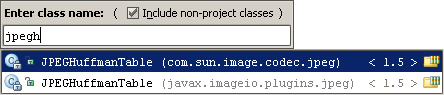

| To open any class in the editor quickly, press &shortcut:GotoClass;
(Go To | Class...)
and start typing the name of the class. Choose the class from a drop-down list that appears.
 The same way you can open non-java files in your project by using &shortcut:GotoFile; (Go To | File...) |